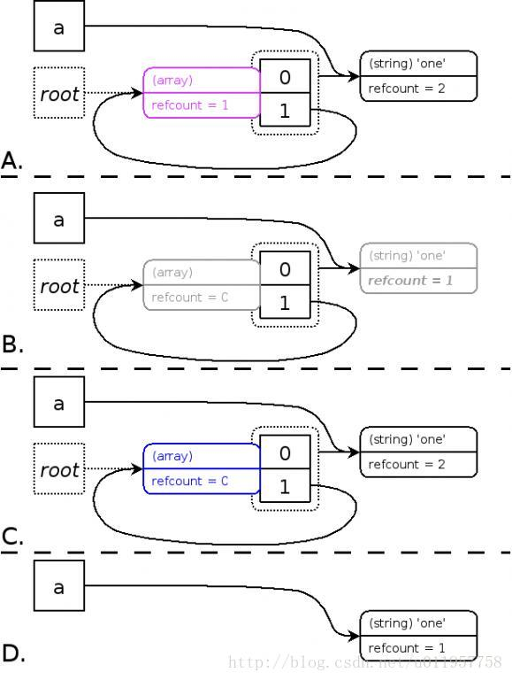

原文： https://blog.csdn.net/u011957758/article/details/76864400
是的，平时经常听到大牛说到的gc，就是垃圾回收器，全称Garbage Collection。
前言
早期版本，准确地说是5.3之前(不包括5.3)的垃圾回收机制，是没有专门的垃圾回收器的。只是简单的判断了一下变量的zval的refcount是否为0，是的话就释放否则不释放直至进程结束。
乍一看确实没毛病啊，然而其中隐藏着变量内存溢出的风险：http://bugs.php.net/bug.php?id=33595 ，无法回收的内存造成了内存泄漏，所以PHP5.3出现了专门负责清理垃圾数据、防止内存泄漏的GC。
下文将由浅入深(凭感觉)来记录下php的垃圾回收机制是怎么一回事？
1.php引用计数基本知识点
2.php的内存管理机制
3.php中垃圾是如何定义的？
4.老版本php中如何产生内存泄漏？
5.5.3版本以后php是如何处理垃圾内存的？
6.涉及到垃圾回收的知识点
php引用计数基本知识点
首先必须要先讲讲这个会引起垃圾回收的关键基数是怎么回事？
关于php的zval结构体，以及refcount与is_ref的知识点，在菜鸟学php扩展 之 详解php扩展的变量(四) 已描述非常清楚。
不准确但却通俗的说：
refcount：计数器，表示指向这个zval变量容器的变量个数。
is_ref：bool类型，变量是否用了地址&的形式进行赋值，值为0或1。
用php的xdebug观察refcount和is_ref值的变化：
ps:首先需要在php上装上xdebug的扩展。
- 第一步：查看内部结构
1 | <?php |
输出：
1 | name:(refcount=1, is_ref=0),string 'le118' (length=5) |
- 第二步：增加一个计数
1 | <?php |
输出：
1 | name:(refcount=2, is_ref=0),string 'le118' (length=5) |
看到了吧，refcount＋1了。
3.第三步：引用赋值
1 | <?php |
输出：
1 | name:(refcount=2, is_ref=1),string 'le118' (length=5) |
是的引用赋值会导致zval通过is_ref来标记是否存在引用的情况。
4.第四步：数组型的变量
1 | <?php |
输出：
1 | name: |
对于数组来看是一个整体，对于内部kv来看又是分别独立的整体，各自都维护着一套zval的refount和is_ref。对象类似。
5.第五步：销毁变量
1 | <?php |
输出：
1 | name:(refcount=2, is_ref=0),string 'le118' (length=18) |
refcount计数减1，说明unset并非一定会释放内存，当有两个变量指向的时候，并非会释放变量占用的内存，只是refcount减1.
php的内存管理机制
知道了zval是怎么一回事，接下来看看如何通过php直观看到内存管理的机制是怎么样的。
外在的内存变化
先来一段代码：
1 | <?php |
输出：
1 | int 1593248 |
大致过程：定义变量->内存增加->清除变量->内存恢复
潜在的内存变化
当执行：
1 | $name = "le118"; |
的时候，内存的分配做了两件事情：1.为变量名分配内存，存入符号表 2.为变量值分配内存
再来看代码：
1 | <?php |
输出：
1 | int 1596864 |
纳尼，怎么和之前看的不一样？内存没有全部回收回来。
对于php的核心结构Hashtable来说，由于未知性，定义的时候不可能一次性分配足够多的内存块。所以初始化的时候只会分配一小块，等不够的时候在进行扩容，而Hashtable只扩容不减少，所以就出现了上述的情况:当存入100个变量的时候，符号表不够用了就进行一次扩容，当unset的时候只释放了“为变量值分配的内存”，而“为变量名分配的内存”是在符号表的，符号表并没有缩小，所以没收回来的内存是被符号表占去。
潜在的内存申请与释放设计
php和c语言一样，也是需要进行申请内存的，只不过这些操作作者都封装到底层了，php使用者无感知而已。
php的内存申请小设计
php并非简单的向os申请内存，而是会申请一大块内存，把其中一部分分给申请者，这样当再有逻辑来申请内存的时候，就不需要向os申请了，避免了频繁调用。当内存不够的时候才会再次申请
php的内存释放小设计
当释放内存的时候，php并非会把内存还给os，而是把内存轨道自己维护在空闲内存列表，以便重复利用，
php中垃圾是如何定义的？
准确地说，判断是否为垃圾，主要看有没有变量名指向变量容器zval，如果没有则认为是垃圾，需要释放。
打个比方：
1 | <?php |
当定义name的时候，处理完字符串准备做其他事情的时候，对于我们来说name的时候，处理完字符串准备做其他事情的时候，对于我们来说name就是可以回收的垃圾了，然而对于引擎来说，$name还是实打实存在的refcount也还是1，所以就不是垃圾，不能回收。当调用unset的时候，也并不一定引擎会认为它是一个垃圾而进行回收，主要还是看refcount是不是真的变为0了。
老版本php中如何产生内存泄漏垃圾？
产生内存泄漏主要真凶：环形引用。
现在来造一个环形引用的场景：
1 | <?php |
得到：
1 | a: |
这样 $a数组就有了两个元素，一个索引为0，值为one字符串，另一个索引为1，为$a自身的引用。
此时删掉$a:
1 | <?php |
如果在小于php5.3的版本就会出现一个问题：$a已经不在符号表了，没有变量再指向此zval容器，用户已无法访问，但是由于数组的refcount变为1而不是0，导致此部分内存不能被回收从而产生了内存泄漏。
5.3版本以后php是如何处理垃圾内存的？
判断处理过程
为解决环形引用导致的垃圾，产生了新的GC算法，遵守以下几个基本准则：
1.如果一个zval的refcount增加，那么此zval还在使用，不属于垃圾
2.如果一个zval的refcount减少到0， 那么zval可以被释放掉，不属于垃圾
3.如果一个zval的refcount减少之后大于0，那么此zval还不能被释放，此zval可能成为一个垃圾
通俗的来说：就是对此zval中的每个元素进行一次refcount减1操作，操作完成之后，如果zval的refcount=0，那么这个zval就是一个垃圾
引用php官方手册的配图：

A：为了避免每次变量的refcount减少的时候都调用GC的算法进行垃圾判断，此算法会先把所有前面准则3情况下的zval节点放入一个节点(root)缓冲区(root buffer)，并且将这些zval节点标记成紫色，同时算法必须确保每一个zval节点在缓冲区中之出现一次。当缓冲区被节点塞满的时候，GC才开始开始对缓冲区中的zval节点进行垃圾判断。
B：当缓冲区满了之后，算法以深度优先对每一个节点所包含的zval进行减1操作，为了确保不会对同一个zval的refcount重复执行减1操作，一旦zval的refcount减1之后会将zval标记成灰色。需要强调的是，这个步骤中，起初节点zval本身不做减1操作，但是如果节点zval中包含的zval又指向了节点zval（环形引用），那么这个时候需要对节点zval进行减1操作。
C：算法再次以深度优先判断每一个节点包含的zval的值，如果zval的refcount等于0，那么将其标记成白色(代表垃圾)，如果zval的refcount大于0，那么将对此zval以及其包含的zval进行refcount加1操作，这个是对非垃圾的还原操作，同时将这些zval的颜色变成黑色（zval的默认颜色属性）
D：遍历zval节点，将C中标记成白色的节点zval释放掉。
通俗点来讲，如：
1 | <?php |
为进行unset之前(step1)，进行算法计算，对这个数组中的所有元素（索引0和索引1）的zval的refcount进行减1操作，由于索引1对应的就是zval_a，所以这个时候zval_a的refcount应该变成了1，这样说明zval_a不是一个垃圾不进行回收。
当执行unset的时候(step2)，进行算法计算，由于环形引用，上文得出会有垃圾的结构体，zval_a的refcount是1(zval_a中的索引1指向zval_a)，用算法对数组中的所有元素（索引0和索引1）的zval的refcount进行减1操作，这样zval_a的refcount就会变成0，于是就认为zval_a是一个需要回收的垃圾。
算法总的套路:对于一个包含环形引用的数组，对数组中包含的每个元素的zval进行减1操作，之后如果发现数组自身的zval的refcount变成了0，那么可以判断这个数组是一个垃圾。
算法优化配置
可能会发现，每次都进行这样的操作好像会影响性能，是的，php做事情套路都是走批量的原则。
申请内存也是申请一大块，仅使用当前的一小部分剩下的等下回再用，避免多次申请。
这个gc算法也是这样，会有一个缓冲区的概念，等缓冲区满了才会一次性去给清掉。
开关配置
php.ini中设置 zend.enable_gc 项来开启或则关闭GC。
缓冲区配置
缓冲区默认可以放10,000个节点，当缓冲区满了才会清理。可以通过修改Zend/zend_gc.c中的GC_ROOT_BUFFER_MAX_ENTRIES 来改变这个数值，需要重新编译链接PHP
关键函数
gc_enable() : 开启GC
gc_disable() : 关闭GC
gc_collect_cycles() : 在节点缓冲区未满的情况下强制执行垃圾分析算法
涉及到垃圾回收的知识点
1.unset函数
unset只是断开一个变量到一块内存区域的连接，同时将该内存区域的引用计数-1；内存是否回收主要还是看refount是否到0了，以及gc算法判断。
2.= null 操作；
a=null是直接将a=null是直接将a 指向的数据结构置空，同时将其引用计数归0。
3.脚本执行结束
脚本执行结束，该脚本中使用的所有内存都会被释放，不论是否有引用环。